Southern University College

Group 2
Presents
An exclusieve presentation that does not use MS Power Point With the help of Hakim El Hattab for his open source codes
Semester 18-B
Lecturer: Yang Chee Beng
Presentation Features
- Select "Shift + ?" key to view all keyboard shortcuts.
- Navigate the slides through "Up, Down, Left, Right" arrow keys.
- Press the "Esc" key for slide overview.
- Press the "B" key for a break.
- Press the "S" key for speaker view.
CSIS 2013
System Analysis and Design
Created by
Eu Xin Hong
D170486C
Thong Zi Sheng
D170431C
Sim Yang Ping
EP170001C
of batch CS17-C
Cyber Cafe
Management System
(★CCMS)
5 Step program
| 1. Select suitable store |
| 2. Interview |
| 3. Discovering use cases |
| 4. Draw a lot of diagrams and draft User Interface |
| 5. Write report and prepare presentation |
1. Select suitable store

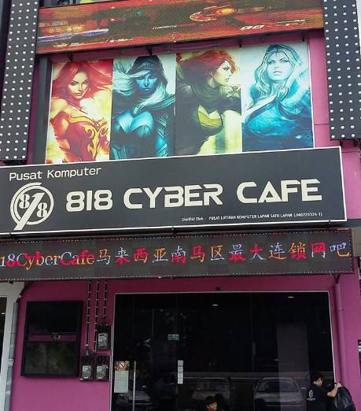
2. Interview
Understand the
-Functional Requirements
(Based on use cases)
-Objectieve
(Enhancements, Automation, User Friendly, Accuracy, Availability)
3. Discovering use cases
4. Draw a lot of diagrams and draft user interface
Activity Diagrams
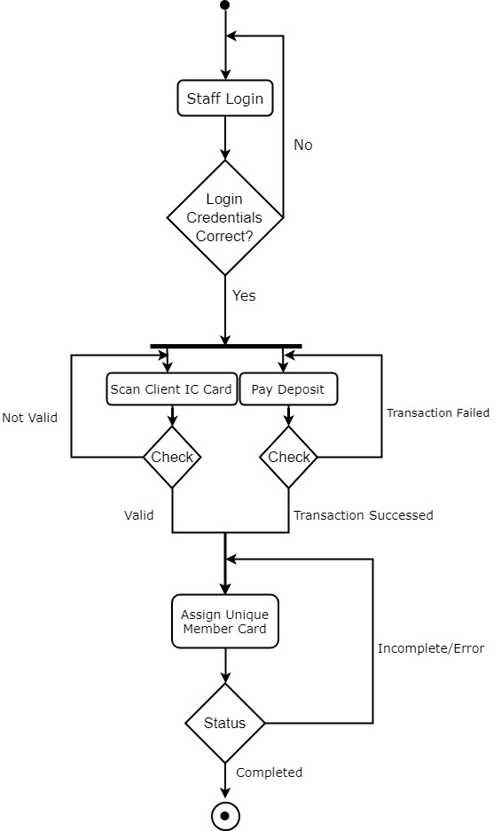
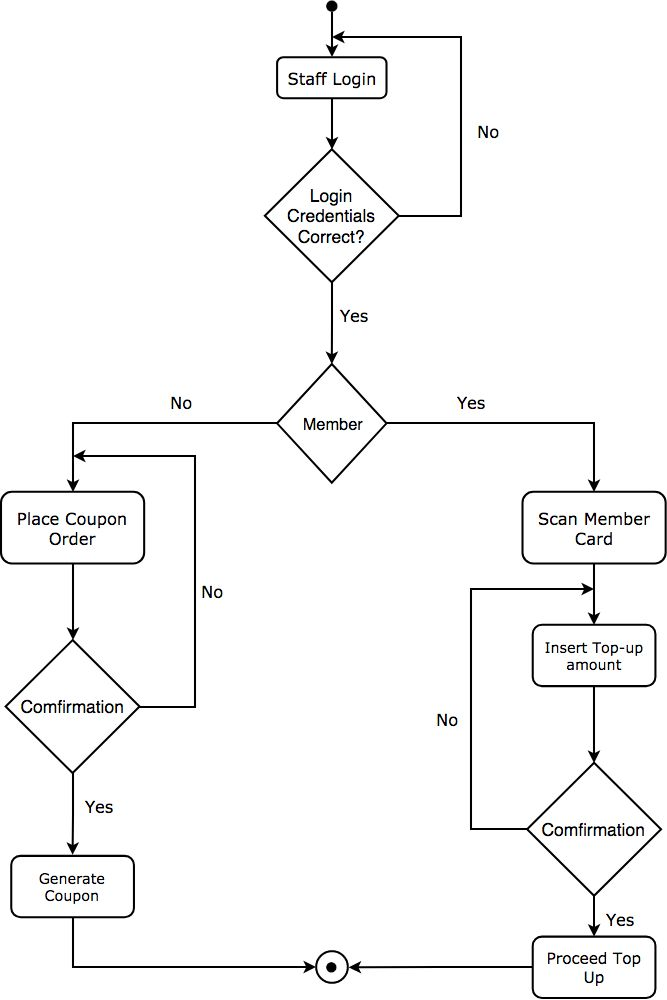
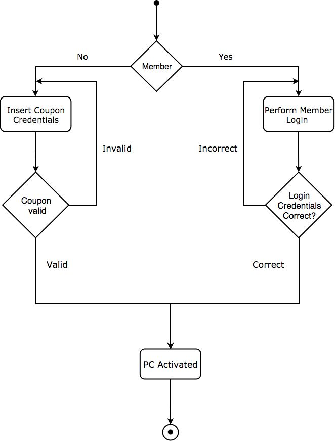
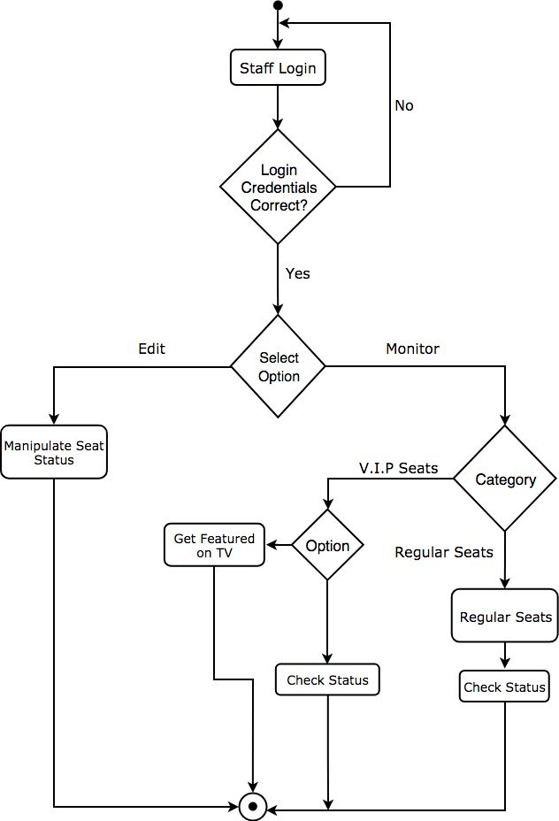
Data Flow Diagrams [DFD]
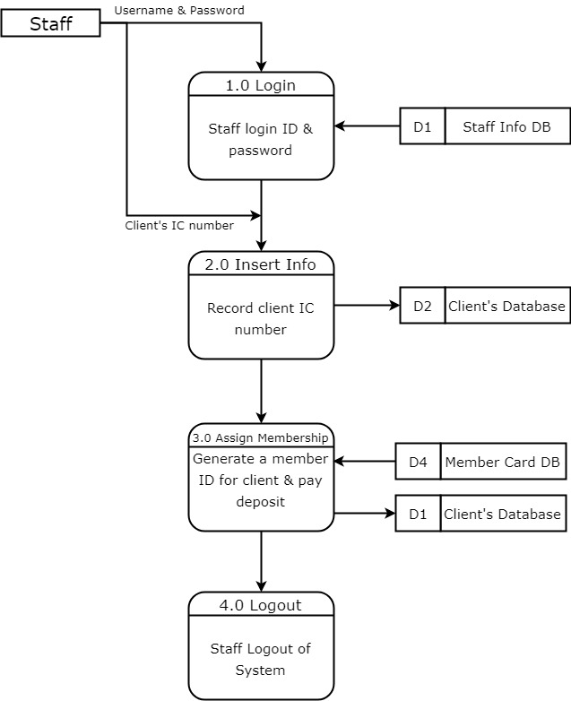


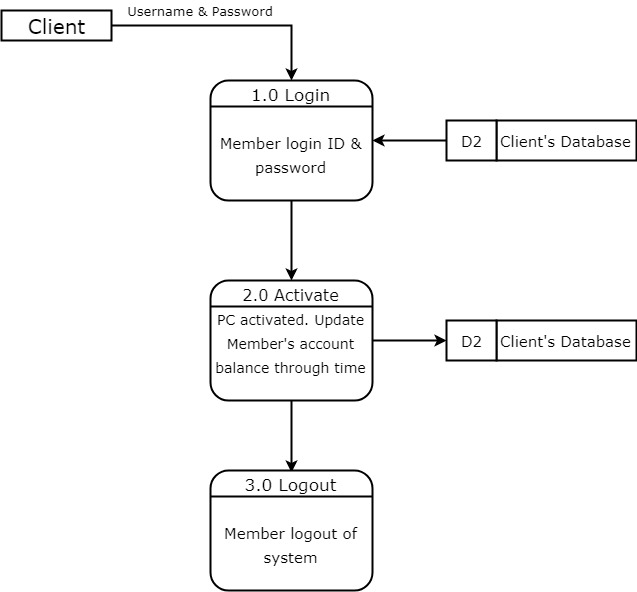
.jpg)
Class Diagram
Sequence Diagrams
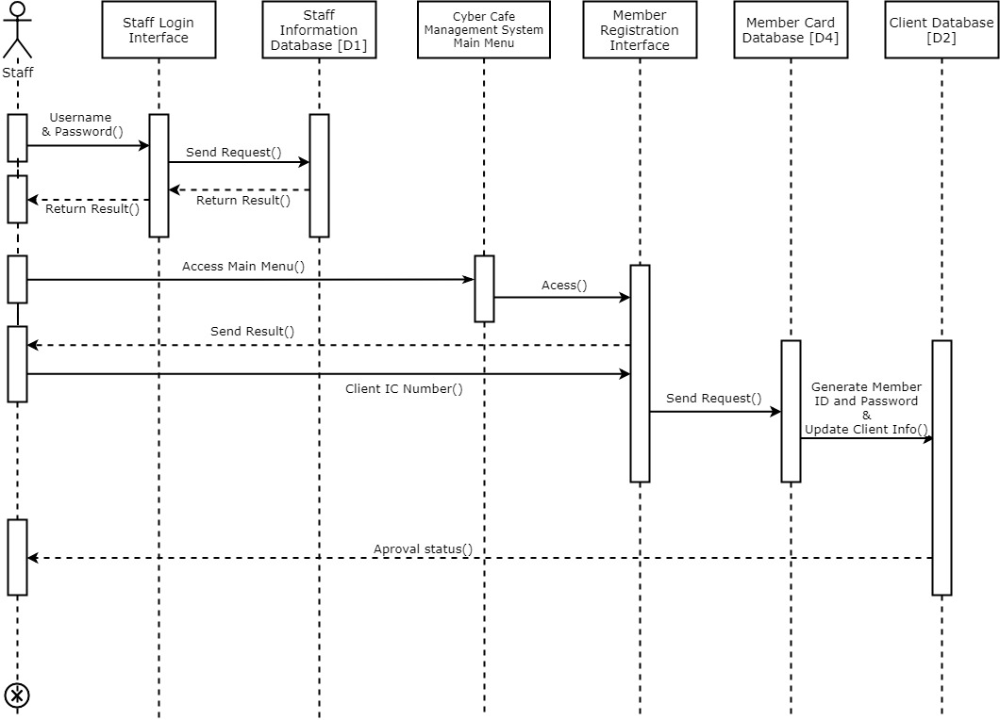
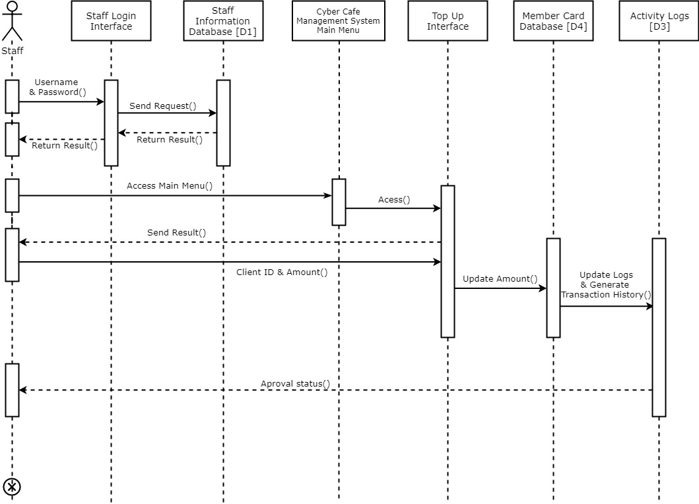
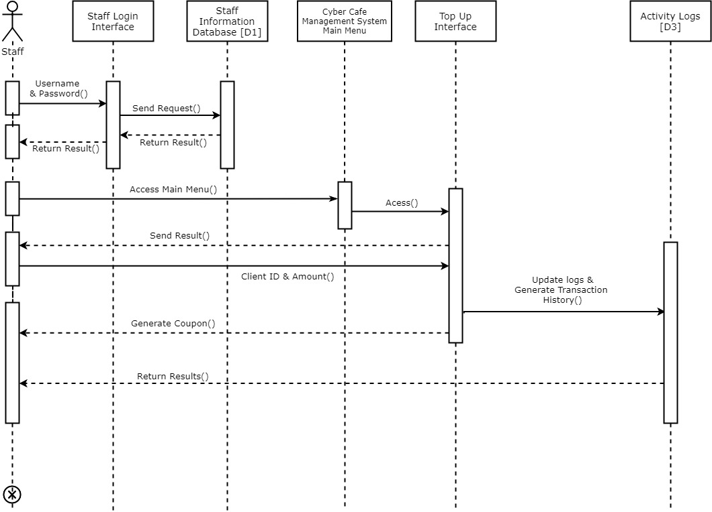
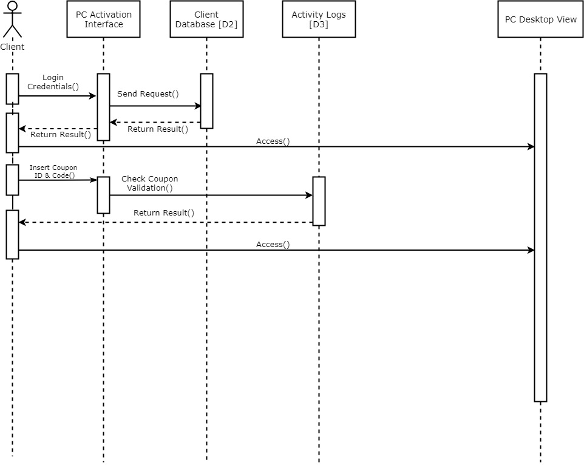
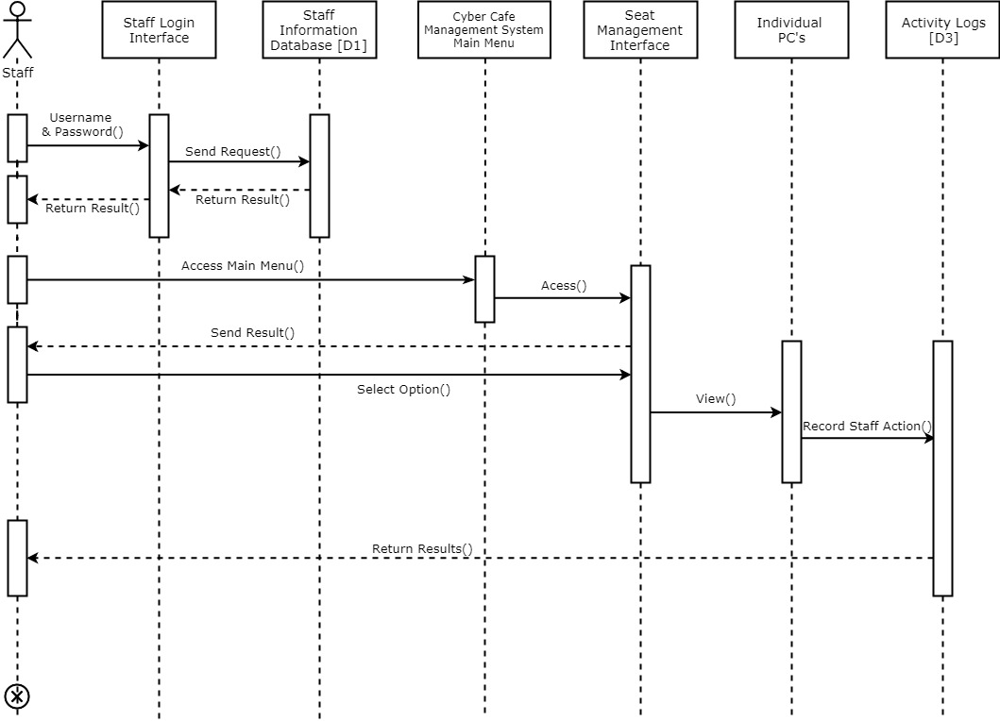
Draft User Interface (UI)


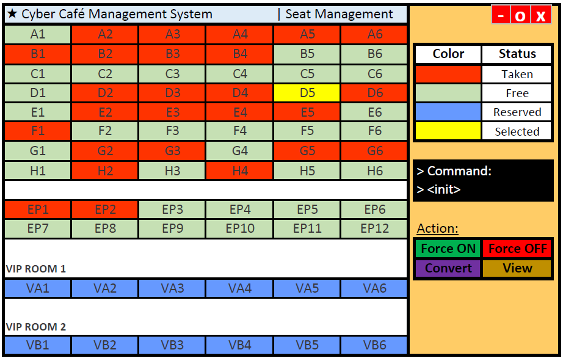
5. Prepare Report and Presentation
You can download the full report here
Conclusion
- ☑ Enhancements
- ☑ ★CCMS is important and more efficient
- ☑ Must built according to the requirements needed
- ☑ Research, analysis and design required before
implementation
THE END
- Thank you